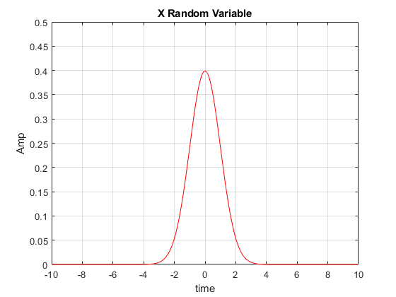

Contents
Hw1 - Q6
Teacher : Dr.Emadi Author: [SeyedAli] - [SeyedHosseini] E-mail: [alishosseini79@aut.ac.ir]
%Student-Number : [9723042] % University: Amirkabir University of Technology
clear recent data
clc;
close all;
clear ;
Initialization
res = 0.01 ; %resolution t = -10 : res : 10 - res ;%time m = 0 ; %mean sigma = 1 ; %unit variance x = normal(t,m,sigma) ; %Gaussian Random Variable a = [-5,-4,-2,0,1,3,5]; %boundries of region N = numel(a) + 1 ;%quantization evels a = [-10,-5,-4,-2,0,1,3,5,10]; %boundries of region
plotting m(t)
clc; figure(1) plot(t,x,'r') hold on; ylabel("Amp") xlabel("time") title("X Random Variable") grid on; axis([-10 10 0 0.5])
cacluation of codebooks
clc; pdf = 'exp(-(x-m).^2/2/sigma^2)/sqrt(2*pi)/sigma'; %Gaussian pdf of x xf = inline(['x.*' pdf],'x','m','sigma');%Pdf of x*fX(x) f = inline(pdf,'x','m','sigma');%Pdf of fX(x) b0 = 0 ; %min of signal bN = max(x) ; %max of signal delta=(bN-b0)/N; %interval between codebooks msqe=0; % Mean-Square Quantization Error for i = 1 : N % Centroid of each interval tmp1 = quad(xf,a(i),a(i+1),0.01,[],m,sigma); %integral(x*fx) between[ai , ai+1] tmp2 = quad(f,a(i),a(i+1),0.01,[],m,sigma);%integral(fx) between[ai , ai+1] tmp = tmp1/tmp2; codebooks(i) = tmp; %centroids of regions x2f=inline(['(x-tmp).^2.*' pdf],'x','m','sigma','tmp'); msqe = msqe + quad(x2f,a(i),a(i+1),0.01,[],m,sigma,tmp); %Expectation of (x - Q(x))^2 end
Quantize
clc; a = [-5,-4,-2,0,1,3,5]; %boundries of region [index,quants,distor] = quantiz(x,a,codebooks); %quantize the signal L = numel(x) ; %length of x Px = sum(x.^2)/L ; %power of r.v SQNR1 = Px /distor ; %signal to quantization noise ratio SQNR1 = pow2db(SQNR1) ;%signal to quantization noise ratio db fprintf(' Variance of Distortion is %f ',distor); fprintf('\n SQNR is %f ',SQNR1);
Variance of Distortion is 0.179592 SQNR is -11.049212
Normal Distribution
function y=normal(x,m,s) % FUNCTION y=NORMAL(x,m,s) % Gaussian distribution % m=mean % s=standard deviation y=(1/sqrt(2*pi*s^2))*exp(-((x-m).^2)/(2*s^2)); end